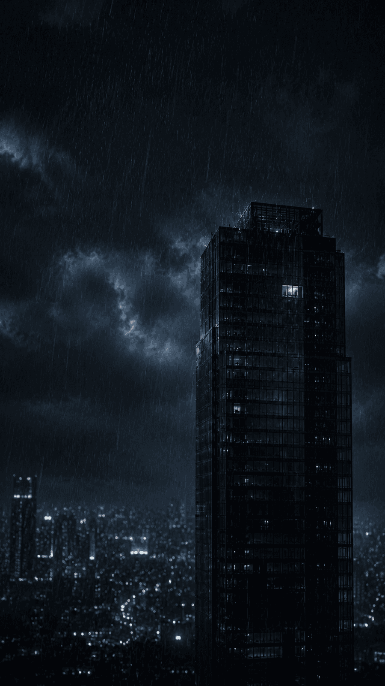

현장의 빛나는 지점을 탭해 조사하라. 모든 지점을 살펴야 다음으로 넘어갈 수 있다.
각 자료를 탭해 검토하라. 모두 검토해야 다음으로.
네 사람의 진술을 탭해 펼쳐 읽어라. 모두 읽어야 다음으로.
한태규가 마지막으로 쥐고 있던 낡은 녹음기. 그의 물건이 아니다. 재생해 들어보라.
표창과 준공, 봉사상 기사들. 처음엔 잉크가 바래 흘려보냈다. 한 장씩 빛에 비춰 다시 들여다보라.
병원 옛 기록 창고. 한태규가 지우지 못한 것들이 어딘가 처박혀 있다. 선반을 뒤져 남은 자료를 찾아라. (0 / 3)
찾은 자료가 모이면, 그 자료들로 그날의 순서를 맞추게 된다.
두 기록을 맞대어 보라. 같은 것을 가리키는 두 장을 골라 겹치면 된다. (두 장 선택)
책상 위에 단서를 펼친다. 이 죽음이 우발이 아니라 오래 벼른 복수임을 증명할 — 같은 곳을 가리키는 두 기록을 골라 들이대라. (보기로 내용을 확인하고, 두 장 선택)
인물을 탭해 증거를 들이대라. 맞는 증거 앞에선 진술이 흔들린다. 네 사람 모두에게서 균열 진술을 끌어내야 다음으로 넘어갈 수 있다.
그날 밤의 시간표다. 천천히 읽어라. 어긋나는 한 곳이 사건의 열쇠다.
외부 침입이 아니라 안의 사람임을 증명하는 단서 하나를 짚어라.
사옥 안의 누군가다. 그날 연차였다면서, 그 시각 14층에 있었던 사람 — 카드 로그와 진술을 맞대 보면 보인다. 단 한 사람을 지목하라.